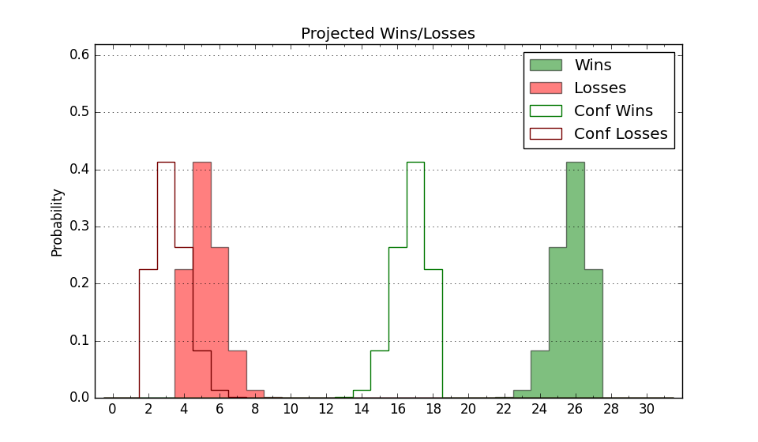

| Home | Game Probabilities | Conferences | Preseason Predictions | Odds Charts | NCAA Tournament |
| City: | Champaign, Illinois | |
| Conference: | Big Ten (2nd)
| |
| Record: | 11-2 (Conf) 20-4 (Overall) | |
| Ratings: | Comp.: 37.2 (4th) Net: 37.5 (4th) Off: 133.5 (1st) Def: 96.0 (20th) SoR: 94.0 (8th) |
| Remaining | ||||||
|---|---|---|---|---|---|---|
| Date | Opponent | Win Prob | Pred. | |||
| 2/10 | Wisconsin (43) | 91.3% | W 89-72 | |||
| 2/15 | Indiana (30) | 86.5% | W 84-72 | |||
| 2/18 | @ USC (52) | 81.2% | W 84-74 | |||
| 2/21 | @ UCLA (39) | 73.0% | W 78-72 | |||
| 2/27 | Michigan (1) | 51.5% | W 82-81 | |||
| 3/3 | Oregon (98) | 96.9% | W 86-64 | |||
| 3/8 | @ Maryland (150) | 95.1% | W 86-66 | |||
| Previous | Game Score | |||||
| Date | Opponent | Win Prob | Result | Off | Def | Net |
| 11/3 | Jackson St. (352) | 99.9% | W 113-55 | 2.7 | 8.0 | 10.7 |
| 11/7 | Florida Gulf Coast (238) | 99.3% | W 113-70 | 9.3 | -6.0 | 3.3 |
| 11/11 | Texas Tech (17) | 81.6% | W 81-77 | -14.3 | 2.7 | -11.6 |
| 11/14 | Colgate (192) | 98.9% | W 84-65 | -14.0 | -7.6 | -21.6 |
| 11/19 | (N) Alabama (20) | 71.4% | L 86-90 | -19.2 | -0.2 | -19.4 |
| 11/22 | LIU Brooklyn (205) | 99.0% | W 98-58 | 2.5 | 9.1 | 11.6 |
| 11/24 | UT Rio Grande Valley (121) | 97.8% | W 87-73 | -9.5 | -11.3 | -20.9 |
| 11/28 | (N) Connecticut (11) | 62.7% | L 61-74 | -22.2 | -0.5 | -22.6 |
| 12/6 | (N) Tennessee (21) | 71.5% | W 75-62 | 8.0 | 10.9 | 18.9 |
| 12/9 | @Ohio St. (36) | 71.0% | W 88-80 | 4.9 | -0.2 | 4.7 |
| 12/13 | Nebraska (14) | 78.1% | L 80-83 | 10.2 | -24.4 | -14.1 |
| 12/22 | (N) Missouri (56) | 90.1% | W 91-48 | 17.1 | 26.2 | 43.3 |
| 12/29 | Southern (280) | 99.5% | W 90-55 | -0.9 | 1.9 | 1.0 |
| 1/3 | (N) Penn St. (122) | 96.1% | W 73-65 | -24.1 | 7.9 | -16.2 |
| 1/8 | Rutgers (154) | 98.5% | W 81-55 | -8.5 | 8.7 | 0.2 |
| 1/11 | @Iowa (18) | 56.9% | W 75-69 | -3.4 | 12.7 | 9.3 |
| 1/14 | @Northwestern (58) | 83.5% | W 79-68 | 6.1 | -10.3 | -4.2 |
| 1/17 | Minnesota (73) | 95.5% | W 77-67 | -0.6 | -10.2 | -10.8 |
| 1/21 | Maryland (150) | 98.5% | W 89-70 | -2.2 | -8.9 | -11.1 |
| 1/24 | @Purdue (6) | 40.8% | W 88-82 | 22.7 | -9.0 | 13.7 |
| 1/29 | Washington (45) | 91.6% | W 75-66 | -4.0 | -6.4 | -10.4 |
| 2/1 | @Nebraska (14) | 51.2% | W 78-69 | 11.9 | 3.3 | 15.2 |
| 2/4 | Northwestern (58) | 94.5% | W 84-44 | 0.3 | 30.5 | 30.8 |
| 2/7 | @Michigan St. (13) | 50.4% | L 82-85 | 3.6 | -8.7 | -5.2 |
| Stats & Trends | |||||
|---|---|---|---|---|---|
| Current | Day | Week | Month | Season | |
| Composite | 37.2 | +0.0 | +1.2 | +4.3 | +14.5 |
| Comp Rank | 4 | -- | +1 | +4 | +13 |
| Net Efficiency | 37.5 | +0.0 | +1.0 | +2.9 | -- |
| Net Rank | 4 | -- | +1 | +3 | -- |
| Off Efficiency | 133.5 | +0.0 | +0.2 | +4.0 | -- |
| Off Rank | 1 | -- | -- | +3 | -- |
| Def Efficiency | 96.0 | +0.0 | +0.8 | -1.1 | -- |
| Def Rank | 20 | -2 | +5 | +2 | -- |
| SoS Rank | 17 | +1 | +1 | +33 | -- |
| Exp. Wins | 25.7 | +0.0 | -0.3 | +2.2 | +4.7 |
| Exp. Conf Wins | 16.7 | +0.0 | -0.3 | +2.2 | +4.8 |
| Conf Champ Prob | 44.3 | +0.2 | -13.8 | +35.8 | +35.8 |

| Advanced Stats | ||
|---|---|---|
| Stat | Value | Rank |
| Off Eff FG % | 0.584 | 25 |
| Off Ast Ratio | 0.163 | 84 |
| Off ORB% | 0.430 | 4 |
| Off TO Rate | 0.110 | 7 |
| Off FT Ratio | 0.374 | 135 |
| Def Eff FG % | 0.436 | 8 |
| Def Ast Ratio | 0.126 | 42 |
| Def ORB% | 0.242 | 18 |
| Def TO Rate | 0.107 | 361 |
| Def FT Ratio | 0.183 | 1 |